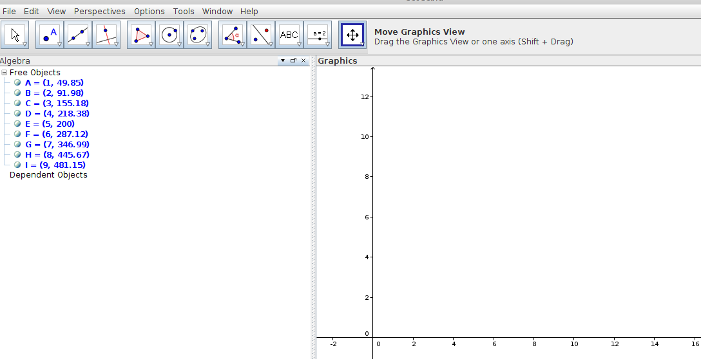
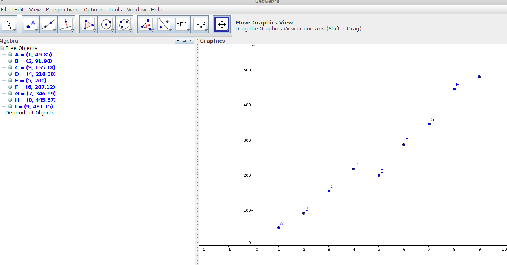
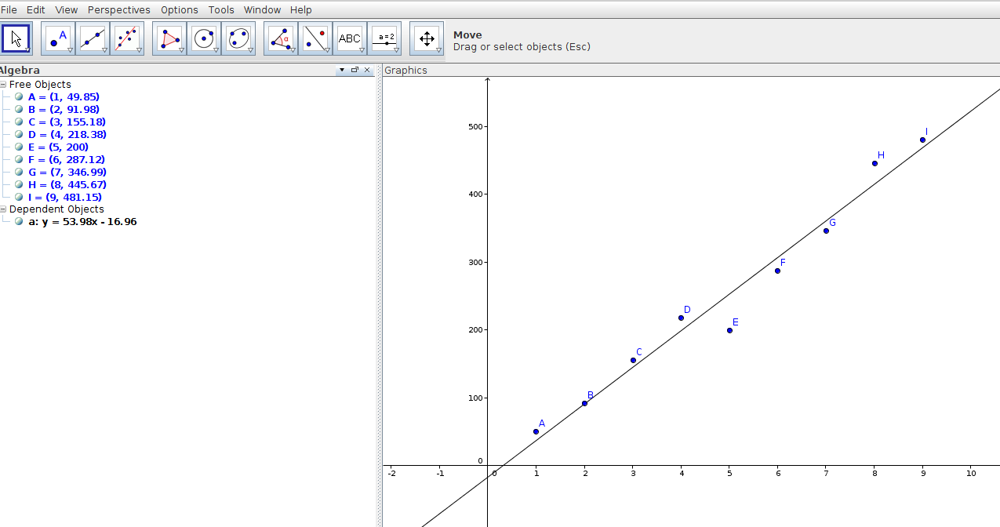

Salt de Bungee
Projecte de Mates
Isaac Muro
A l'hora de realitzar un salt segur i excitant, que hem de tenir un compte?
| Número de gomes |
Distància de baixada (mm) |
| 1 |
|
| 2 |
|
| 3 |
|
| 4 |
|
| 5 |
|
| ... |
|
La goma que té lligada a les cames ja compta com a 1.
En la taula anterior heu de representar la distància des del punt que la deixeu caure fins el punt més baix.
Penseu molt bé com mesurareu bé l'altura del salt
Entrada de dades

A l'entrada escriviu (1,49.54)
Ajusteu els eixos

Botó dret sobre els Graphics, Show All Objects.
Calculem la recta de regressió

Seleccionem tots els punts, i apretem a Best Fit Line.
\[\begin{aligned}
y - \overline{y} & = \frac{\sigma_{xy}}{\sigma_x^2} (x - \overline{x}) \\
\sigma_{xy} & = \frac{\sum x_i y_i}{n} - \overline{x} · \overline{y} \\
\sigma_x^2 & = \frac{\sum x_i^2}{n} - \overline{x}^2 \\
\end{aligned} \]
- Què vol dir aquesta equació de la recta?
- Com interpretem els paràmetres?
- Té sentit que aproximem a una recta o hi hauria alguna forma millor?
- Quantes gomes haurem de fer servir per fer un salt emocionant però segur des de dalt d’algun lloc concret?
- Només tindrem una oportunitat!!